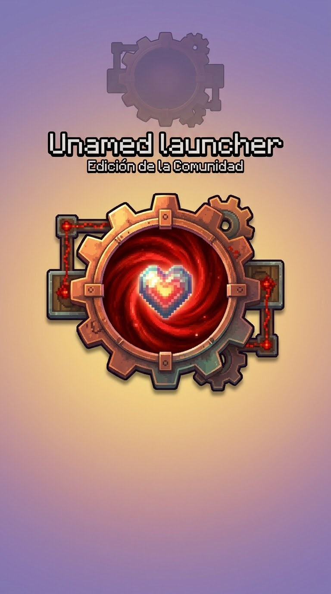

Un inicio sin laberintos
Instancia seleccionada, botón de jugar y accesos a controles, Java y ajustes. Tu biblioteca sigue siendo tuya.
Minecraft Java en Android, con un corazón de comunidad. Menos ruido, más control y ajustes que puedes entender.
Compilación de prueba · ARM64 / ARM32 · Android 5.0+ para instalar el launcher

Sin cifras de rendimiento inventadas. Sin promociones automáticas. Con opciones reversibles.
Instancia seleccionada, botón de jugar y accesos a controles, Java y ajustes. Tu biblioteca sigue siendo tuya.
Resolución dinámica opcional y modos Unlimited, Manual u Original. Inventarios y menús recuperan la resolución manual.
Diagnósticos opcionales para comparar sesiones. Más FPS de renderizado no significa más fotogramas presentados en la pantalla.
Descarga siempre desde las Releases del fork. No necesitas instalar MobileGlues como una aplicación aparte.
Ver última prerelease ↗Unamed.launcher.apk en la prerelease actual y revisa sus cambios técnicos.Una nueva identidad no borra el camino recorrido. Este fork conserva sus avisos y licencias.
CS Launcher / CS Launcher Plus. El aviso original acredita a ROHIT_45 como desarrollador y creador.
Proyecto de origen ↗Base del launcher Android sobre la que se apoya esta familia de proyectos.
PojavLauncher ↗MobileGlues y los componentes LWJGL, SDL, OpenAL Soft, SPIRV-Cross y ANGLE conservan sus propias licencias.
Componentes y avisos ↗Mantenimiento de este fork e identidad comunitaria. La ilustración fue aportada por Yohan; no se atribuye a esta edición la creación del código original.
Cambios de la comunidad ↗Los menús e inventarios recuperan la resolución manual. El HUD durante el juego todavía comparte el framebuffer del mundo; no hay renderizado independiente de la interfaz.
No. Elimina el limitador de software configurado, pero la pantalla, Android, el driver, el backend, el juego y las condiciones térmicas pueden limitar el resultado. No se prometen cifras para ningún dispositivo.